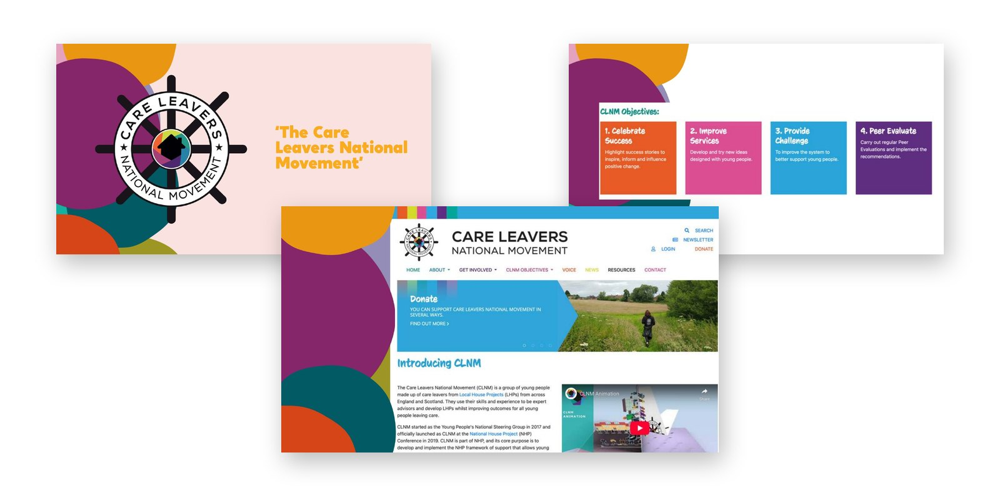
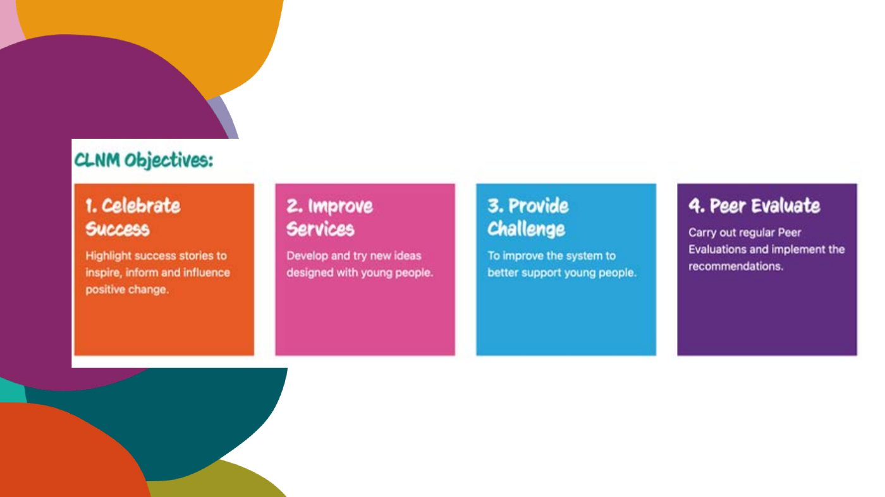
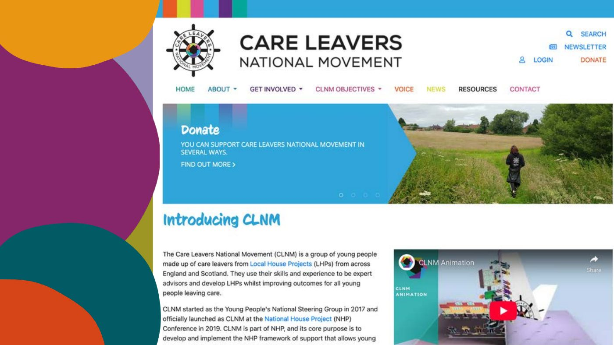

n
nThe National House Project: the Care Leavers National Movement, a national voice for young people leaving care
The National House Project helps young people leaving care into their first home. When it became a national charity, it wanted young people leaving care to guide it. We trained 12 care-experienced young people from six local authorities in leadership and social entrepreneurship, and they formed the Care Leavers National Movement.

The starting point
The House Project helps young people leaving care move into their first home. Young people join in groups of around 10, renovate a property together and move in as tenants, with the group as their support network. We worked on it from the start: youth engagement in the Stoke-on-Trent pilot, then consultancy on rolling it out nationally as members of the project board. When it became a national charity, The National House Project asked us to set up a group of young people to guide it, give feedback to the chief executive and trustees, and represent young people across the project.
What we did
- PilotYouth engagementActivities, events and feedback from young people in the Stoke-on-Trent pilot, alongside the local participation team
- National roll-outProject boardFound councils willing to run the House Project and helped them set it up
- The charityA steering groupAsked to set up a group of young people to guide the new charity
- Leadership12 young peopleA programme in social entrepreneurship: co-design, project development, public speaking, networking and storytelling
- The movementA three-day residentialYoung people from six councils formed the Care Leavers National Movement: vision, mission, brand, membership and terms of reference
- Every monthMovement meetingsRun with the young people, with the movement answering requests from across the House Project network
- The launchNational conferenceCo-designed and facilitated the conference that launched The National House Project
How the movement works
The young people set four areas of operation for the movement:
- Highlight success stories, to move the picture of young people leaving care from deficit to aspiration
- Raise challenges in the systems that support young people leaving care, focusing on systems rather than individuals
- Test ideas designed by young people in local House Projects
- Run youth-led peer reviews of each local House Project
Services across the House Project network could also request a consultation. The movement looked at each request at its next meeting and sorted it: answer now, schedule it, ask for more information, or decline politely with a reason.
Peer reviews
The movement was tasked with a yearly peer review of each local House Project, run by care-experienced young people trained to do it. Each review was designed to look at how well young people were supported towards the House Project’s ORCHIDS outcomes: ownership, responsibility, community, homes, independence, direction and a sense of wellbeing. It would give direct feedback on young people’s experience, the good practice the reviewers saw, and ways to develop.
Why it matters
Twelve young people trained in leadership. A movement that kept growing.
Since we stepped back, the Care Leavers National Movement has grown to include 12 local authorities and started the Keep Care Leavers Connected campaign.
“Luke’s work with young people to establish the Care Leavers National Movement was transformational. Empowerment is a frequently used term; Luke’s work made young people’s power and ownership within the House Project a living reality for young people.”
The movement gave a national charity a standing group of young people leaving care to guide it, with a clear remit and real work to do. Their lived experience sat alongside the professional knowledge of the House Project team and the councils running it. It is the approach behind our participation work: train young people in leadership first, then give them a real role.
See the work
Open any piece to look through it page by page.
Four areas of operation
What the movement chose to do. Choose one.
Four areas of operation
Share what young people leaving care achieve, moving the picture from deficit to aspiration.
Raise problems in the systems around young people, focusing on systems rather than individuals.
Try ideas designed by young people in local House Projects.
Young people review each local House Project against the ORCHIDS outcomes.


What we built with them
- Vision and mission In the young people’s own words
- Brand and website A name, a logo and a home online
- Leadership training Co-design, project development, public speaking, networking and storytelling
- Structure Membership, terms of reference and governance
- Rhythm A three-day residential, then monthly movement meetings
- Launch Co-designed and facilitated the National House Project launch conference
Sorting a request
- Answer now If the movement can respond at the meeting
- Schedule it If it needs more time
- Ask for more If the request isn’t clear
- Decline politely With a reason
Services across the House Project network could ask the movement for a view. Each request was sorted at the next meeting.